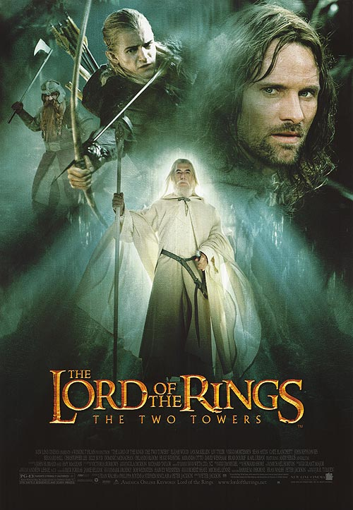
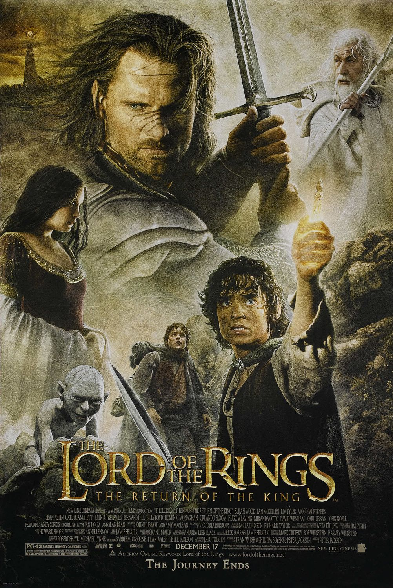
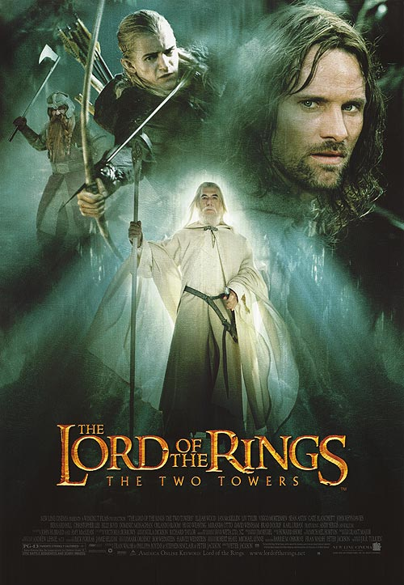
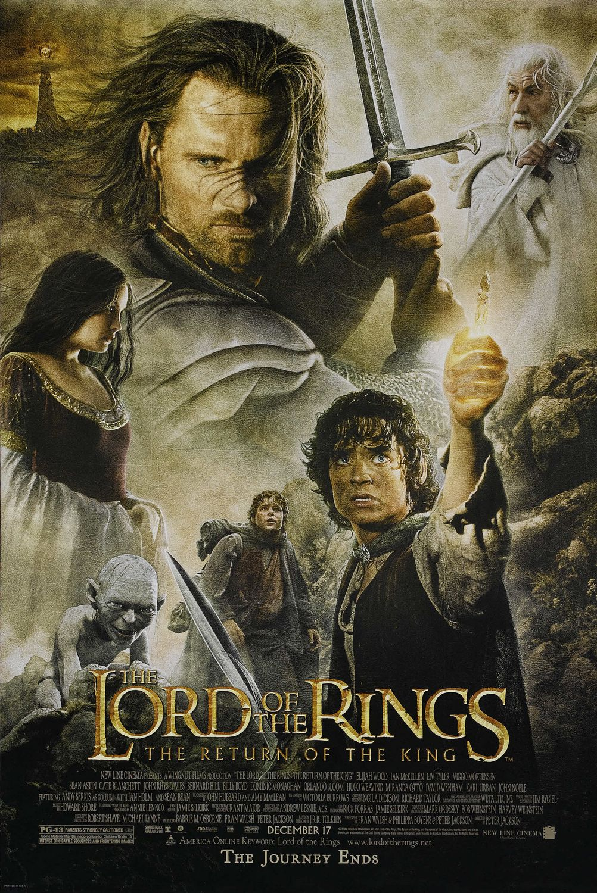

Aquí va alguna información que deberías conocer
‘El Señor de los Anillos‘ es una obra ambientada en la Tercera Edad de La Tierra Media, mundo inventado por J.R.R. Tolkien. Narra una gran aventura: el viaje emprendido por 9 compañeros para destruir un Anillo lleno de poder maléfico. Su argumento es complejo y se narra con la participación de varios protagonistas que se mueven en varios hilos narrativos. Es una obra coral en la que destacan unos pocos protagonistas (Frodo, Sam, Gandalf y Aragorn).
‘El Señor de los Anillos‘ es la novela magna de J.R.R. Tolkien. Es una leyenda heróica y épica, donde se habla del lugar que ocupan los imprevistos e imprevisibles. De las hazañas de los aparentemente pequeños e insignificantes. Es el respeto por la naturaleza, una oda a la amistad, al esfuerzo, al querer es poder. A la voluntad y la persistencia por encima de la dificultad.
Como dice Gandalf, “no nos toca a nosotros decidir qué tiempo vivir, sólo podemos elegir qué hacer con el tiempo que se nos ha dado”

 


